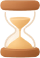

808 on Apple Watch, in the valley
The Watch app redrawn in the app's own look, with a session length and the sound chosen on the wrist. Every background below is the real valley, painted by the same code as the iPhone and the new widget, at Watch size. The buttons and words are drawn on top for review.
1. Starting a session
Otto sits in the valley at the real hour, at his current glow. The two cream pills are the + screen's: length and sound. One gold Begin, the only gold thing on the screen.

10 min›2. Choosing a length and a sound
Length works like the + screen's tape: the Digital Crown slides it, Open at one end, then every minute from 5 to 120. Sound is the iPhone's full list, scrolled with the crown.
3. During the session
The iPhone's sit, at Watch size: the sun sets as the session goes on, and the ring hangs in the sky over Otto. A timed session draws its arc; an open one counts up with no arc.
4. When it ends
A timed session ends by itself; an open one ends on End. Then the results go to the iPhone exactly as they do now.
minutes.
to see how you settled.
Three calls before it's built
1. How does a timed session end on the wrist?
The Watch plays no haptics, by Melvin's rule (a buzzing wrist reads as an interruption). That rule was made when every Watch session was open-ended. With a length set on the wrist, a silent end means a person with eyes closed never knows the time is up, unless the iPhone is nearby and rings its bell.
Options: (a) keep the wrist silent; the iPhone's bell and end notification do the job when it is near. (b) one soft tap at the end of a timed session only, nothing during. Recommended: (b), but it reverses Melvin's rule, so it is his call with yours.
2. Where does the sound play?
Every sound file lives on the iPhone (about 50 MB), and the Watch only picks from the list. A session started on the wrist plays its sound on the iPhone when the iPhone is in reach, and is silent when it is not.
Recommended: keep it that way for now. Playing on the Watch itself (through AirPods paired to the Watch) would mean putting the sounds on the Watch, a much bigger change.
3. Does the Watch share the iPhone's length?
The + screen remembers a length on the iPhone. The Watch could follow it, or keep its own.
Recommended: the Watch starts from the iPhone's length and then remembers its own last choice, so someone who sits 5 minutes on the wrist and 20 at home gets both.
- Otto's picture is one of his seven glow stills, the same ones the widget uses, so his glow on the wrist matches Home. The iPhone sends the Watch his current level.
- The rest stays as it is: Allow for Health, "Set up 808 on your iPhone first", starting a session from the iPhone, End on either device, and the results on the iPhone.
- Smaller Watches (41 and 42 mm) get the same screens with the pills on one line each if the words do not fit side by side.